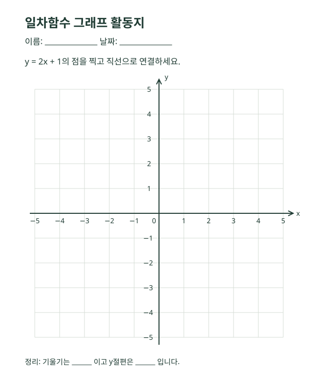

수학 / 중학교
일차함수의 그래프
2026.10.31 · 1차시 예제 · 학습 목표: 기울기와 y절편을 설명할 수 있다.

1. 핵심 개념
일차함수 y = ax + b에서 a는 기울기, b는 y절편입니다. x가 1 증가할 때 y는 a만큼 변합니다.
2. 표를 완성해 봅시다
y = 2x + 1의 함수값을 구하세요.
| x | −2 | −1 | 0 | 1 | 2 |
|---|---|---|---|---|---|
| y | −3 | −1 | 1 | 3 | 5 |
3. 그래프 그리기
아래 활동지를 내려받거나 인쇄하고, 표의 점을 찍어 직선으로 연결하세요.

4. 생각 나누기
- 기울기가 2에서 −2로 바뀌면 그래프는 어떻게 달라질까요?
- y절편이 1에서 3으로 바뀌면 그래프는 어떻게 이동할까요?
이 페이지는 직접 작성한 공개 예제 자료입니다.